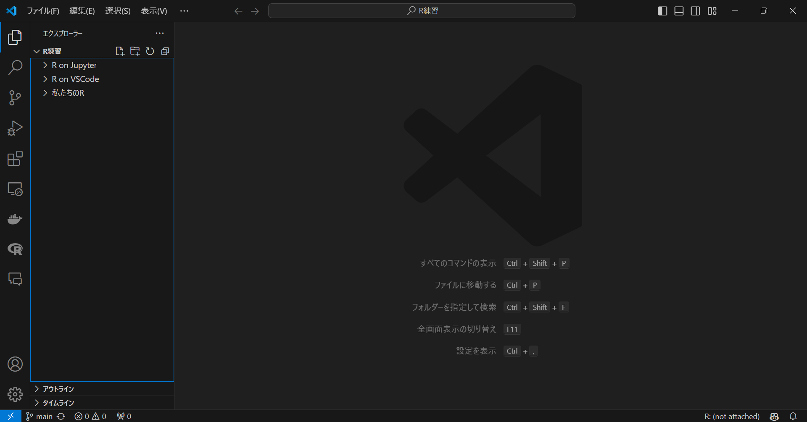

2024年8月29日：DVCの認証プロセスでエラーが出るようになっています。そのうち改善されるかもしれませんが、エラーが出る場合はデータもGitHubで管理するようにするのが良いかもしれません。データサイズの制限はあるのですが、そこまで大きなデータを使わなければ問題ないと思います。
2024年8月31日：Google Cloud Projectを用いた解決策について別記事でまとめましたので、その案内を追加しました。
はじめに
DockerとVSCodeを使ってRの環境を構築する方法を説明します。
基本的な内容は次のページを参考にしており、個人的に使いやすいように修正を加えています。
開発コンテナを使うメリットは、環境を簡単に共有でき、他の環境に影響を受けずに作業ができることです。
また、最初は設定の際に結構待ち時間が生じますので、ご了承ください。
事前準備
まず、WSL2, Ubuntu, Homebrew, VSCode, Docker, Git, そしてGitHubの準備をします。WindowsとMacでの設定が異なるため、それぞれについて説明します。
ホスト側、共同作業者ともに事前準備が必要です。
WSL2（Windowsユーザーのみ）
- PowerShellまたはWindowsコマンドプロンプトを管理者権限で開く
- 右クリックで管理者権限を使えます。

- 以下のコマンドを入力して実行
- これでインストールはできるはずですが、詳しくはこちらのサイトを参照してください。
PowerShell
wsl --install- ユーザー名とパスワードを設定
- インストールが終わると、Linuxディストリビューションのユーザー名とパスワードの作成を求められます1。
- ユーザー名は何でも大丈夫です。パスワードもめちゃくちゃ簡単で問題ありません。
- パスワードは画面上には表示されませんが、ちゃんと入力されています。慌てて何回も入力しないようにしてください。
エクスプローラーからLinuxに入り、\Ubuntu\home\ユーザー名がメインとなるディレクトリです。
Homebrew（Macユーザーのみ）
MacユーザーはHomebrewを使って諸々インストールしていくので、まだの方はここでインストールしてください。
- ターミナルを開く
- アプリ一覧から「ターミナル」を探してください。
- 以下のコマンドを入力して実行
- パスワードを求められるので、入力してください。
Terminal
/bin/bash -c "$(curl -fsSL https://raw.githubusercontent.com/Homebrew/install/HEAD/install.sh)"VSCode
- VSCodeのダウンロードサイトからダウンロード、インストール
- Download for Windows2をクリックしてダウンロードできます。
- インストールができたら、VSCodeを開いてください。
- （任意）日本語の拡張機能をインストール
- 画面左側に拡張機能のアイコン
 があります。ここの検索ボックスに
があります。ここの検索ボックスにMS-CEINTL.vscode-language-pack-jaと入力し、1番上に出てきたものをインストールします3。 - インストール後、VSCodeを再起動すれば日本語が反映されていると思います。
- 画面左側に拡張機能のアイコン

- 拡張機能のインストール
- 拡張機能の検索ボックスで、次のIDを入力し、インストールします。
ms-vscode-remote.remote-containers(Dev Containers)ms-vscode-remote.remote-wsl(WSL, Windowsユーザーのみ)
- WSLに接続（Windowsユーザーのみ）
- VSCodeから先ほどインストールしたWSLに接続します。
- 画面左下の
><アイコンをクリックして、「WSLへの接続」をクリックします。

Docker
Dockerをインストールします。
- Windowsの方はここからDocker Desktop for Windowsを、Macの方はこちらからダウンロード＆インストール
- 設定の確認（Windowsのみ）
- インストール出来たら、画面上部の設定ボタンからResources、WSL integrationと進み、チェックボックスにチェック、Ubuntuがオンになっていることを確認してください。
- たまに、何もしていないのにここがオフになっていて、トラブることがあります。
- 詳しくはこちらをご覧ください。日本語で書いてあります。

- 画面左側のVolumesに進み、Createからボリュームを作成
- 次の3つを作成します（大文字小文字に注意！）。
fonts,cache,TinyTeX

Git
Windows
- UbuntuでGitをインストール
- Windowsのアプリ一覧からUbuntuを探し、開いてください。開いたら、以下のコマンドを入力して実行します。
Ubuntu
sudo apt-get install git
- 設定
- 以下のコマンドを入力、実行します。ユーザー名は何でも大丈夫です。
- ここに限らずですが、
[]ごと置き換えてくださいね。
Ubuntu
git config --global user.name [任意のユーザ名]
git config --global user.email [任意のメールアドレス]Mac
- HomebrewでGitをインストール
- ターミナルを開いて、以下のコマンドを入力して実行します。
Terminal
brew install git
- 設定
- 以下のコマンドを入力、実行します。ユーザー名は何でも大丈夫です。
Terminal
git config --global user.name [任意のユーザ名]
git config --global user.email [任意のメールアドレス]GitHubアカウントの作成
ファイルは基本的にGitHubで管理するので、ここからアカウントを作成してください。
ポイント
GitHubアカウントを作成したら、VSCodeにログインしておきましょう。
- VSCodeを開く
- 画面左下のアイコンをクリック
- GitHubでサインインを行う
GitHubにログインすることで、その後の作業がスムーズに進みます。
事前準備は以上です！
開発環境の構築
Dockerを用いて環境を構築するにあたり、柳本和春さんのテンプレートをベースに作成しています。詳しくは柳本さんの記事をご覧ください。
主な変更点は以下の通りです。
- RStudioの設定を追加（パネルの配置など）
- それに伴うDockerfileの加筆修正と、更なる設定の追加
- Quartoのインストールを追加
- 個人的にエラーが生じた部分を修正
- 日本語のロケール設定を追加
RStudioでこの後作業することになりますが、コマンドを打つと以下の警告が出てくるかもしれません。
警告メッセージ: Character set is not UTF-8; please change your locale
しかし、警告は出るものの、実際の作業には特に問題ありません。これに対処しようと試みましたが、できませんでした…。
もし詳しくて対処できた方は、コメントから教えていただけると幸いです。
まずは基本設定4から説明します。
基本設定
GitHubリポジトリを作成
- テンプレートのGitHub リポジトリにアクセス
- 画面右の「Use this template」から「Create a new repository」を選択
- Repository nameを記入
- Privateを選択
- 通常のプロジェクトならPrivateでOK
- 「Create repository」をクリック
リポジトリをクローン
- VSCodeを開く
- 画面左側のアイコンから「ソース管理」5を開く
- 「リポジトリの複製」を選択し、さらに「GitHubから複製」を選ぶ
- リポジトリを選択し、クローン
- リポジトリは、「ユーザー名/リポジトリ名」の形式で表示されます。
- 基本的に表示されると思いますが、表示されない場合は手入力してください。
- クローンしたリポジトリを開くか問われるので、開いてください。
- 画面右下に「コンテナーで再度開く」と出たらクリック
- 出ない場合、画面左下「WSL: Ubuntu」6をクリックし、「コンテナーで再度開く」を選択してください。
- 初めて環境を構築する場合、ここでかなり時間がかかるので辛抱強く待ちましょう。

エクスプローラーを開き、\\wsl.localhost\Ubuntu\home\ユーザー名を確認してみてください。リポジトリ名と同じフォルダができていると思います。
Macの場合は、ユーザー名の下にできているはずです。
クローンしたフォルダを見てみると、リポジトリにはあるはずのファイルやフォルダが見当たらないかもしれません。

このようなときは、Finderの隠しファイルを表示する設定を変更する必要があります。
以下をターミナルで実行してください。
Terminal
defaults write com.apple.finder AppleShowAllFiles TRUE
killall Finderこれで、隠しファイルも表示されるようになります。
正直なところ、この設定は隠しファイルが邪魔であればしなくてもよいと思います7。VSCode上ではきちんと表示されますので。
RStudioで開く
ここで、ブラウザを用いてRStudioを開きます。毎度この手順を踏む前に、VSCode上で開発コンテナに接続していることを確認してください。開いていないと、次のリンクは無効なものになってしまいます。
- 任意のブラウザで、アドレスバーに
localhost:8787と入力して開く - 右上の
![]() をクリックし、「New Project…」を選択
をクリックし、「New Project…」を選択 - 「Existing Directory」を選択
- 「Browse…」より「work」を選択して「Choose」をクリック
- 「Create project」をクリックするとプロジェクトが作成されます。
- コンソールに以下を入力して実行
renvはパッケージを管理するためのパッケージです。- Dockerfileでインストールすることを指示しているので、コンソールでインストールせずとも既に使用可能です8。
R
renv::init()Pythonの設定（任意）
Pythonを使う場合、以下のパッケージをインストールしておきます。
使わない場合はスキップしてください。
使い方としては、Quarto上でPythonのコードを書くことを想定しています。そのために必要なパッケージですが、その他のパッケージを使用する場合も同様の方法でインストールしてください。
- VSCodeに戻る
- 画面上部「ターミナル」より「新しいターミナル」を選択
- 以下のコマンドを入力して実行
Terminal
pip install ipykernel jupyterパッケージはcacheにキャッシュがあるので、1回インストールすれば、2回目以降の環境構築では不要です。
DVCの設定
DVCはデータを管理するためのツールです。
事前準備として、自分のGoogleドライブの任意の場所で、データを入れる用のフォルダを作成しておいてください。
また、共同プロジェクトの場合は、フォルダの共有も設定してください。
- VSCodeに戻る
- 画面上部「ターミナル」より「新しいターミナル」を選択
- 既に画面下部にターミナルが表示されている場合はスキップして大丈夫です。
- 以下のコマンドを入力して実行
- 初めて環境構築するときに1回実行しておけば、2回目以降の環境構築では不要です。
Terminal
pip install dvc dvc-gdrive- Googleドライブで作成したフォルダのIDをコピー
- IDは、ドライブでフォルダを開いたときのURLで、最後のスラッシュ（~/folders/）より右側の部分です。
- 次のコマンドを入力して実行
- 最後の部分（四角括弧ごと）をコピーしたIDに変更してください。
Terminal
dvc init && dvc remote add -d myremote gdrive://[Google DriveのフォルダID]LaTeXの設定
R Markdownなどで\(\LaTeX\)を使用するために、TinyTeXをインストールします。
RStudioのコンソールに以下のコマンドを入力して実行してください。
また、TinyTeXもキャッシュされるので、1回インストールすれば、2回目以降の環境構築では実行不要です。
R
install.packages("tinytex")
tinytex::install_tinytex(dir = "/home/rstudio/.TinyTeX", force = TRUE)TinyTeXは、\(\LaTeX\)コードをコンパイルする際に必要なパッケージを自動でダウンロードしてくれるので、ローカルに面倒な設定をしなくて良いのが魅力です。
R MarkdownやQuartoでのPDF出力の仕方については、こちらの記事もご覧ください。
Juliaの設定（任意）
参考記事の設定に基づき、Juliaが使えるようになっているため、その始め方についても書いておきます。特に使う予定がなければ、スキップしてください。
- VSCodeに戻り、ワーキングディレクトリに
Project.tomlというファイルを作成
VSCode上でファイルやフォルダを作成するためには、左側のアイコン一番上の「エクスプローラー」をクリックし、その中の上部にあるアイコンの「新しいファイル…」や「新しいファイル…」を選択することでできます。
ここで注意点ですが、状況によっては意図せずフォルダの中に作ってしまうことがあります。
ワーキングディレクトリにファイルを作成したい場合は、まずエクスプローラーの空き部分をクリックします。すると、枠全体が青い線で囲まれると思います。
この状態であれば、親フォルダにファイルやフォルダが新規作成されます。下の画像の左側に注目してください。

一方、特定のフォルダの中に作成したい場合は、そのフォルダをクリックしてから新規作成を行ってください。

- キーボードで
Ctrl+Shift+Pを入力9 - 「Julia: Start REPL」を選択
- 少し下の方にあると思います。検索をかけると楽かもしれません。1度使ったものは上に表示される仕組みなので、2回目以降は探しやすいと思います。
- 少し時間がかかります。
- ターミナルで、以下のコマンドを入力して実行
Julia
using Pkg
Pkg.activate()以上でJuliaの事前準備ができました。
共同プロジェクトの場合
共同プロジェクトの場合は、GitHubで共有するため、以下の手順を踏んでおいてください。
- GitHubリポジトリでコラボレーターを追加
- リポジトリのSettingsからCollaboratorsに進み、コラボレーターを追加してください。
- Add peopleから招待できます。
ホスト側の環境構築もここで一区切りです！
共同作業者の設定
共同作業者も事前準備は終わらせておいてください。
- GitHubで招待を受ける
- メールが届いているはずですので、そこからGitHubにログインしてください。
- リポジトリにアクセスできるようになります。
- リポジトリをクローン
- ホスト側が作成したリポジトリをクローンします。
- ホスト側の設定と同様にしてクローンし、開いてください。
一旦ここまでで、共同作業者の設定は終わりです。
作業
ワークフローについて説明します。
GitHub関連10についてはこちらの記事で詳しめに解説しましたので、そちらも参考にしてください。
Rのパッケージ
作業中新たにパッケージを使用した場合、それをrenv.lockファイルに記録することで、必要なパッケージを記録することができます。記録することで環境を移したときに必要なパッケージをすぐインストールできたり、共同研究者と必要なパッケージを共有することができます。
バージョンごと記録できるので、全く同じ環境を再現することが可能です。
新しいパッケージをインストールし、コード内で使用したら、以下のコードを実行し、lockファイルに記録してください11。
R
renv::snapshot()異なる環境に移行した場合、以下のコードで記録したパッケージを一括インストールできます。
R
renv::restore()これでRの開発環境を揃えることができます。
また、新しいパッケージを使ったら、その作業が終わるごとにrenv::snapshot()で記録しましょう。
Python のパッケージ
設定ではPythonの設定も加えていますので、必要に応じてPythonも使用できます。
また、そもそもDVCがPythonのパッケージなので、それもrenvと同様に記録できます。
- Pythonのパッケージを追加
- 先ほどと同様に、新しいターミナルを開いて、以下のコードでパッケージをインストールします。
- DVC以外特に使うものがなければ、ここはスキップしてください。
Terminal
pip install [パッケージ名]- パッケージを記録
- Rと同様に、作業が終わったら以下のコードでパッケージを記録します。
Terminal
pip freeze > requirements.txt- パッケージをインストール（異なる環境に移行した場合）
- 次のコードで、
requirements.txtに記録したパッケージをインストールできます。
- 次のコードで、
Terminal
pip install -r requirements.txtデータの管理
冒頭にも書いたように、エラーの対処に関する記事を書きました。
認証でブロックを食らった場合には、以下の記事を参照して下さい。
また、その他エラーいくつかエラーにも遭遇しましたので、以下の記事も参考にしてください。
データはDVCで管理します。データはGoogle Drive上で保管されます。
- ワーキングディレクトリに、
dataというフォルダを作成 - データが入ったら、以下のコードを実行
dataフォルダごとドライブに追加します。dataフォルダは.gitignoreに記載されているため、GitHubにはアップロードされません。
Terminal
dvc add data/データは、WindowsのエクスプローラーやMacのFinderから直接フォルダに入れて大丈夫です（通常のWindowsやMacでの作業のように）。
データをプッシュした後にGoogle Driveを見てもらえれば分かりますが、よくわからない形で保存されています。DVCの仕組みがそうなっているからなので、決してファイルが破損しているわけではありません。
ちなみにWindowsユーザーの方で、一回ローカルに落としてからLinuxにデータ等を入れたらZone.Identifierというファイルができることがありますが、これは無視して大丈夫です。邪魔であればまとめて消してください。
- データをアップロード
- 以下のコードでデータをプッシュします。
Terminal
dvc push最初はaddとpushをする過程でアカウントの認証が必要になりますが、表示に従って認証を進めてください12。
- （共同作業者）データのダウンロード
- 以下のコードでデータをダウンロードします。
Terminal
dvc pullJuliaのパッケージ
Julia はパッケージが自動でProject.tomlに保存されるため、共同作業者がインストールするだけで大丈夫です。
- 先ほどと同じ手順で環境をアクティベートする
- 以下のコードでパッケージをインストール
Julia
Pkg.instantiate()まとめ
これらの作業を通じて、共同作業者もホスト側と同じ環境を揃えることができます。
環境を揃えるためには、コミット、プッシュ、プルを行い、記録したファイルを共有することが重要です。
単独での場合は、ブランチを作成する必要はないですが、コミット、プッシュで管理を行いましょう。
以上がワークフローです。お疲れ様でした！
環境構築まとめ
作業フローは、超適当にまとめると次のようになります。
ホスト
- 必要なソフト等をインストールし、事前準備を行う。
- WSL2, Ubuntu, Homebrew, VSCode, Docker, Git, GitHub
- GitHubでリポジトリをインポート、クローン
- RStudio Serverでプロジェクトを作成
renv::init()でrenvを開始renv::snapshot()で適宜パッケージを記録
dataフォルダを作成し、DVCで管理- データは
data内に追加 dvc add data/とdvc pushを使用
- データは
- VSCode上でコミット、プッシュ
共同作業者
- 必要なソフト等をインストールし、事前準備を行う。
- WSL2, Ubuntu, Homebrew, VSCode, Docker, Git, GitHub
- GitHubでリポジトリをクローン
- RStudio Serverでプロジェクトを開く
renv::restore()でパッケージをインストール
- VSCode上で
pip install -r requirements.txtを実行- Pythonパッケージをインストール
dvc pullでデータをダウンロード- VSCode上でコミット、プッシュ
作業中
- GitHubにコミット、プッシュ、プルを繰り返す。
- データも新たに追加した場合、DVCでadd, push, pullを行う。
おわりに
今回はDocker & VSCodeを用いた開発環境を説明しました。
個人的な経験として、環境構築はエラーとの戦いです。できるだけエラーに遭遇しないよう丁寧に書いたつもりですが、まだまだ把握していないエラーがたくさんあると思います。
何かエラー等ありましたら、コメントしていただけると幸いです。
参考文献
追記
2024/5/11：リポジトリ作成の手順を変更
2024/5/22：Mac への対応と、内容の刷新
2024/5/25：リポジトリのクローン方法を変更
2024/6/10：テンプレートのキャッシュに関する設定を変更
2024/9/18：GitHubの説明を簡略化
注
求められない場合は、続けて
wslとだけ入力してください。↩︎もしくは Mac↩︎
単にJapaneseでも出てきます。笑↩︎
単独研究ならここのみでOK、共同研究ならホストが行う設定。↩︎
上から3番目↩︎
Mac なら
><↩︎TRUE のところを FALSE にして再度実行すれば消せます。↩︎
余談ですが、
renv::init()のようにパッケージ名::関数のような書き方をすれば、library(パッケージ名)をせずとも関数を使えます。1度だけ使いたいようなときに便利です。↩︎Ctrlは Mac だとcommand↩︎コミット、プッシュやブランチなど↩︎
インストールしただけでコード内で使用していない場合は記録できません。↩︎
私の場合認証の読み込みが終わらない問題によく直面するので、その際にはターミナルを消し、再度新しいターミナルで実行するようにしています。↩︎